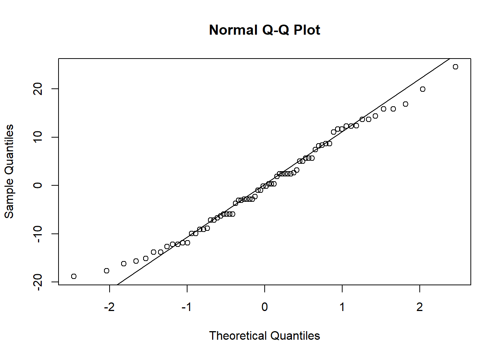

Nesta aula, aprendemos alguns testes estatisticos basicos, dependendo do tipo de análises.
Testes para amostras independentes
Code
#Dica: para procurar de que pacote a função vem, pesquisa na internet o nome da função, seguido de in r.#ativa os pacotes necessários library(gsheet)library(ggplot2)library(stats)library(dplyr)library(tidyr)library(report)library(rstatix)library(ggpubr)library(multcomp)#install_packages("see")#cria o objeto com os dados que serão utilizados. Esses dados são da planilha dados-diversos, disponibilizada pelo professor. dat_mg <-gsheet2tbl("https://docs.google.com/spreadsheets/d/1bq2N19DcZdtax2fQW9OHSGMR0X2__Z9T/edit?gid=983033137#gid=983033137")#faz primeiro o plot para analizar vsualmente os dados dat_mg |>ggplot(aes(trat, comp))+geom_jitter(width =0.1)
Testes para saber se há diferença estatistica
Teste T para amostras independentes
Code
?t.test #usando o caractere "?" seguido do nome da função, serve para mostrar como o comendo funciona, lhe dá mais informações sobre pacotes e funções. #transformar a planilha do formato longo para o formato largo dat_mg2 <- dat_mg |>pivot_wider(names_from = trat, values_from= comp)|> dplyr::select(-rep)attach(dat_mg2)t.test(Mg2, control) #Teste T, que compara os tratamentos.
Welch Two Sample t-test
data: Mg2 and control
t = -8.1549, df = 17.354, p-value = 2.423e-07
alternative hypothesis: true difference in means is not equal to 0
95 percent confidence interval:
-6.490393 -3.825607
sample estimates:
mean of x mean of y
10.520 15.678
Code
saída_t_teste <-t.test(Mg2, control) #cria um objeto para receber o resultado do teste T#invertendo as variáveis t.test(control, Mg2)
Welch Two Sample t-test
data: control and Mg2
t = 8.1549, df = 17.354, p-value = 2.423e-07
alternative hypothesis: true difference in means is not equal to 0
95 percent confidence interval:
3.825607 6.490393
sample estimates:
mean of x mean of y
15.678 10.520
Code
saída_teste_T <-t.test(control, Mg2) #cria um objeto para receber o resultado do teste T#aplica a função report para gerar texto de interpretação dde saída dos resultados, neste caso para o teste T library(report)report(saída_teste_T)
Effect sizes were labelled following Cohen's (1988) recommendations.
The Welch Two Sample t-test testing the difference between control and Mg2
(mean of x = 15.68, mean of y = 10.52) suggests that the effect is positive,
statistically significant, and large (difference = 5.16, 95% CI [3.83, 6.49],
t(17.35) = 8.15, p < .001; Cohen's d = 3.65, 95% CI [2.14, 5.12])
Code
#função para quando a tabela está no formato longo e não no largo, sem necessidade de transformação dos dados na tabela library(rstatix)t_test(comp ~ trat, data = dat_mg)
Code
test_t <-t_test(comp ~ trat, data = dat_mg)test_t
Code
#Plotando o resultado do teste T e adicionando o valor de P manualmente #install.packages("ggpubr")library(ggpubr)p <-ggboxplot( dat_mg, x ="trat", y ="comp", color ="trat", palette ="jco")print(p) #comando para mostrar o gráfico plotado, caso não apareça
Code
#adiciona o valor de P manulamente p +stat_pvalue_manual(test_t, label ="p",y.position =18)+ylim(0,20)+labs(x ="Tratamento",y ="Comprimento (mm)")
Code
ggsave("plot2.png", bg ="white" ) #comando para salvar o gráfico
Teste de normalidade
Code
#testando a normalidade dos dados acima shapiro.test(Mg2)
Shapiro-Wilk normality test
data: Mg2
W = 0.97269, p-value = 0.9146
Code
shapiro.test(control)
Shapiro-Wilk normality test
data: control
W = 0.93886, p-value = 0.5404
Code
hist(Mg2)
Code
hist(control)
Code
# análise de variancia para validar o teste T, variancia e homogeneidadevar.test(dat_mg2$Mg2, dat_mg2$control)
F test to compare two variances
data: dat_mg2$Mg2 and dat_mg2$control
F = 1.4781, num df = 9, denom df = 9, p-value = 0.5698
alternative hypothesis: true ratio of variances is not equal to 1
95 percent confidence interval:
0.3671417 5.9508644
sample estimates:
ratio of variances
1.478111
Code
#ajuste no teste T caso as variancias não sejam homogeneas t.test(control, Mg2, var.equal =FALSE)
Welch Two Sample t-test
data: control and Mg2
t = 8.1549, df = 17.354, p-value = 2.423e-07
alternative hypothesis: true difference in means is not equal to 0
95 percent confidence interval:
3.825607 6.490393
sample estimates:
mean of x mean of y
15.678 10.520
#faz um teste de variancia var.test(unaided, aided)
F test to compare two variances
data: unaided and aided
F = 20.978, num df = 9, denom df = 9, p-value = 0.000106
alternative hypothesis: true ratio of variances is not equal to 1
95 percent confidence interval:
5.210754 84.459185
sample estimates:
ratio of variances
20.97847
Code
hist(unaided)
Code
hist(aided)
Code
shapiro.test(unaided)
Shapiro-Wilk normality test
data: unaided
W = 0.7748, p-value = 0.007155
Code
shapiro.test(aided)
Shapiro-Wilk normality test
data: aided
W = 0.92852, p-value = 0.4335
Code
#como a variancia foi heterogenea, faz o seguinte ajuste no testet.test(unaided, aided, paired =TRUE, var.equal =FALSE)
Paired t-test
data: unaided and aided
t = -4.4214, df = 9, p-value = 0.001668
alternative hypothesis: true mean difference is not equal to 0
95 percent confidence interval:
-0.3552353 -0.1147647
sample estimates:
mean difference
-0.235
Code
#teste de Wilcoxon se apresenta como uma alterativa ao teste t pareado, ou seja, quando o objetivo também é verificar se existe diferença significativa de uma variável numérica entre dois grupos de interesse.wilcox.test(unaided, aided)
Wilcoxon rank sum test with continuity correction
data: unaided and aided
W = 0, p-value = 0.0001756
alternative hypothesis: true location shift is not equal to 0
Code
#teste equivalente Mann-Whitney é o teste não paramétrico equivalente ao teste t para amostras independenteswilcox.test(unaided, aided, paired =FALSE)
Wilcoxon rank sum test with continuity correction
data: unaided and aided
W = 0, p-value = 0.0001756
alternative hypothesis: true location shift is not equal to 0
Code
#paired = false o transforma num mann-whitney
Testes para 3 ou mais niveis de fator (3 ou mais tratamentos)
#Anova anova1 <-aov(tcm ~ especie, data = micelial) anova1
Call:
aov(formula = tcm ~ especie, data = micelial)
Terms:
especie Residuals
Sum of Squares 1.4695800 0.4679167
Deg. of Freedom 4 25
Residual standard error: 0.1368089
Estimated effects may be unbalanced
Code
anova(anova1)
Code
#outra forma de fazer a ANOVA anova2 <-lm(tcm ~ especie, data = micelial)anova(anova2)
Code
#residuo é a diferença entre o estimado pelo modelo e o observado #será que os resíduos são normais? residuals(anova1) #resíduos da anova
shapiro.test(residuals(anova1)) #testa a normalidade dos resíduos
Shapiro-Wilk normality test
data: residuals(anova1)
W = 0.9821, p-value = 0.8782
Code
#teste para variancias de modelo #teste bartlett testa se as variancias são homogeneasbartlett.test(tcm ~ especie, data = micelial)
Bartlett test of homogeneity of variances
data: tcm by especie
Bartlett's K-squared = 4.4367, df = 4, p-value = 0.3501
Code
#teste de levene tem o mesmo propósito (menos sensível a desvios de normalidadelevene_test(tcm ~especie, data = micelial)
Code
#Use Levene quando os dados não forem normalmente distribuídos.#Use Bartlett quando os dados forem normalmente distribuídos.#Se ambos os testes indicarem que as variâncias são iguais, você pode seguir com a ANOVA.library(emmeans)#pacote para calcular as médias do modelo e intervalo de confiança. Realiza contrastes e estimativas de médias após a modelagem estatística m <-emmeans(anova2, ~ especie) m
#emmeans nos deu a média por espécies, então usa o multicomp para comparar e visualizar as diferenças entre elas #install.packages("multcomp")#install.packages("multcompView")library(multcomp)library(multcompView)#o pacote multcom realiza comparações múltiplas (post hoc) após modelos lineares, modelos lineares generalizados, e outros tipos de modeloscld(m) #mostra letras compactas, ou seja, os grupos. Nesse caso, do emmeans
Code
pwpm(m) #mostra as médias na diagonal e compara entre os tratamentos em forma de matriz
#no caso acima a normalidade estava ok e as variancias eram nos resíduos
Quando os dados não seguem distribuição normal…
Code
#aqui utilizamos um banco de dados do proprio R. insetos <- InsectSpraysView(insetos) #comando para visualizar o conjunto de dados insetos |>ggplot(aes(spray, count))+geom_boxplot(outlier.colour =NA)+geom_jitter(width =0.1)
Code
#modelo de anova para inspecionar normalidade e variancia anova3 <-lm(count ~spray, data = insetos)anova(anova3)
Code
#teste para variaveis homogeneas bartlett.test(count ~spray, data = insetos)
Bartlett test of homogeneity of variances
data: count by spray
Bartlett's K-squared = 25.96, df = 5, p-value = 9.085e-05
Code
#sempre que a variancia for heterogenea tem que ajustar #Ajusta um modelo linear (lm) para verificar se o tipo de spray tem efeito no número de insetos mortos (count) m2 <-lm(count ~spray, data = insetos)hist(residuals (m2))
Code
shapiro.test(residuals(m2))
Shapiro-Wilk normality test
data: residuals(m2)
W = 0.96006, p-value = 0.02226
Code
#neste caso não é distribuição normal e nem homogenea #verificar visualmente se os resíduos do modelo m2 seguem uma distribuição normalqqnorm(residuals(m2))qqline(residuals(m2))
Code
#quando chamar qqnorm e qqline juntos a linha e os pontos tem que estar juntos, para ser de fato normal, indicar normalidade.
Alternativas quando os dados não seguirem normalidade e homogenedade
Tem 3 alternativas para os casos em que isso ocorra, dados não normais e heterogeneos (em ANOVA)
Alternativa 1: transformação de dados, transformar a resposta
Shapiro-Wilk normality test
data: residuals(m3)
W = 0.8663, p-value = 1.736e-06
Code
qqnorm(residuals(m3))qqline(residuals(m3))
Code
#continuou com o erro, agora testa raiz quadrada #REGRA: neste caso a raiz é uma boa saída pois quando são dados de contagem numa distribuição de poisson não normal, a raiz quadrada tende a normalizar a contagem individual. #aplica o modelo raiz quadrada e aplica a Anova parametrica normal m4 <-lm(sqrt(count) ~ spray, data = insetos)hist(residuals (m4))
Code
shapiro.test(residuals(m4))
Shapiro-Wilk normality test
data: residuals(m4)
W = 0.98721, p-value = 0.6814
Code
qqnorm(residuals(m4))qqline(residuals(m4))
Code
#testar se as variâncias são homogêneasbartlett.test(sqrt(count) ~spray, data = insetos)
Bartlett test of homogeneity of variances
data: sqrt(count) by spray
Bartlett's K-squared = 3.7525, df = 5, p-value = 0.5856
Code
anova(m4)
Code
report(m4)
We fitted a linear model (estimated using OLS) to predict count with spray
(formula: sqrt(count) ~ spray). The model explains a statistically significant
and substantial proportion of variance (R2 = 0.77, F(5, 66) = 44.80, p < .001,
adj. R2 = 0.76). The model's intercept, corresponding to spray = A, is at 3.76
(95% CI [3.40, 4.12], t(66) = 20.73, p < .001). Within this model:
- The effect of spray [B] is statistically non-significant and positive (beta =
0.12, 95% CI [-0.40, 0.63], t(66) = 0.45, p = 0.653; Std. beta = 0.04, 95% CI
[-0.15, 0.23])
- The effect of spray [C] is statistically significant and negative (beta =
-2.52, 95% CI [-3.03, -2.00], t(66) = -9.81, p < .001; Std. beta = -0.94, 95%
CI [-1.13, -0.75])
- The effect of spray [D] is statistically significant and negative (beta =
-1.60, 95% CI [-2.11, -1.08], t(66) = -6.22, p < .001; Std. beta = -0.59, 95%
CI [-0.79, -0.40])
- The effect of spray [E] is statistically significant and negative (beta =
-1.95, 95% CI [-2.46, -1.44], t(66) = -7.61, p < .001; Std. beta = -0.73, 95%
CI [-0.92, -0.54])
- The effect of spray [F] is statistically non-significant and positive (beta =
0.26, 95% CI [-0.25, 0.77], t(66) = 1.01, p = 0.318; Std. beta = 0.10, 95% CI
[-0.09, 0.29])
Standardized parameters were obtained by fitting the model on a standardized
version of the dataset. 95% Confidence Intervals (CIs) and p-values were
computed using a Wald t-distribution approximation.
Code
m44 <-emmeans(m4, ~spray, type ="response")cld(m44)
Code
plot(m44)
Alternativa 2: teste não parametrico equivalente a anova
Code
#ou seja ele não depende das duas premissas de normalidade e homogeneidade, ele faz um ranqueamento, tipo o wilcox#O teste de Kruskal-Wallis é um método estatístico não paramétrico que compara se três ou mais grupos têm a mesma distribuição. #mas este teste só diz que pelo menos um é diferente, mas não aponta quais são. kruskal.test(count ~ spray, data = insetos)
Kruskal-Wallis rank sum test
data: count by spray
Kruskal-Wallis chi-squared = 54.691, df = 5, p-value = 1.511e-10
Code
kruskal_test(insetos, count ~ spray)
Code
#Para realizar o teste de Kruskal-Wallis e fazer comparações múltiplas pós-hoc entre os grupos, semelhante ao Tukey, mas para dados não paramétricos.library(agricolae) kruskal.test(insetos$count, insetos$spray, group =TRUE, console =TRUE)
Kruskal-Wallis rank sum test
data: insetos$count and insetos$spray
Kruskal-Wallis chi-squared = 54.691, df = 5, p-value = 1.511e-10
Code
#Mostra o p valor e a diferença entre as médias. O "group = true" exibe as letras dos agrupamentos, enquanto "console = true" apresenta os resultados no console#como foi significante, transforma para rank para fazer o não parametrico. m5 <-lm(rank(count) ~spray, data = insetos) m5
Shapiro-Wilk normality test
data: residuals(m5)
W = 0.98287, p-value = 0.4342
Code
qqnorm(residuals(m5))qqline(residuals(m5))

Code
#quando partir para a alternativa a anova parametrica? ou seja, quando não possui normalidade nem homogeneidade dos dados.(usando shapiro-wilk, que testa normalidade dos residuos, e o bartlett ou levene que testam a homogeneidade)#essas comparações multiplas são post-hoc, as duas primeiras opções, mas quando não dá siguinificativo não faz post hoc, pois não tem diferença entre grupos #quando não tem via de transformação, nada resolveu o problema de normalidade e homocedasticidade, tem que usar não parametrico mesmo!
Code
#utilizando o pacote DHARMa #install.packages("DHARMa")library(DHARMa)#faz uma simulação dos residuos, não pega somente observação #o DHARMa é mais intuitivo, ao invés de usar Levene, hist, qqnorm, shapiro..., pode usar o teste DHARMa como padrão. Para ver visualmente todas estas estatisticas em uma única função, por meio da simulação dos resíduos. Dando siguinificativo, vai para os testes post hoclibrary(emmeans)library(tidyverse)insetos <- InsectSpraysView(insetos)m2 <-lm(count ~ spray, data = insetos) #variâncias não são homogêneasplot(simulateResiduals(m2))
Code
m2 <-lm(log(count+1) ~ spray, data = insetos) #transformar os dados para tornar as variâncias homogêneasplot(simulateResiduals(m2))
Code
library(emmeans) #para estimar as médiaslibrary(multcomp)m2.2<-emmeans(m2, ~ spray, type ="response")cld(m2.2)
#nas ANOVAs, possuem um tipos especial de modelo linear generalizado, onde a distribuição é normal, Gaussiana, existem familias de dirtrubuição. #no caso de dados de contagem, como de insetos, usa de Poisson, neste caso não galsiana. m2.3<-glm(count ~ spray, data = insetos, family = poisson) m2.3
medias_m2.3<-emmeans(m2.3, ~ spray, type ="response") medias_m2.3
spray rate SE df asymp.LCL asymp.UCL
A 14.50 1.100 Inf 12.50 16.82
B 15.33 1.130 Inf 13.27 17.72
C 2.08 0.417 Inf 1.41 3.08
D 4.92 0.640 Inf 3.81 6.35
E 3.50 0.540 Inf 2.59 4.74
F 16.67 1.180 Inf 14.51 19.14
Confidence level used: 0.95
Intervals are back-transformed from the log scale
Code
cld(medias_m2.3)
Code
#outra forma de testar o modelo #install.packages("performance") library(performance)performance(m2.3)
Code
check_model(m2.3)
Code
#dados de sim e não, usa a familia binomial #o professor recomenda usar o DHARMa ao invés do check model, ele não é tão consistente
Source Code
---title: "Aula_3_Testes_estatisticos"author: "Karine Mesquita"format: html: code-fold: true # permite esconder/mostrar os códigos (com uma abinha) code-tools: true # adiciona botões de copiar/mostrar código toc: true # inclui um sumário (índice)editor: visualeditor_options: chunk_output_type: inlineexecute: warning: false # oculta mensagens de warning message: false # oculta mensagens do tipo "package loaded" echo: true # mostra o código include: true # mostra o output dos chunks---# Notas de aula# Aula 3_Testes estatisticosNesta aula, aprendemos alguns testes estatisticos basicos, dependendo do tipo de análises.## Testes para amostras independentes```{r}#Dica: para procurar de que pacote a função vem, pesquisa na internet o nome da função, seguido de in r.#ativa os pacotes necessários library(gsheet)library(ggplot2)library(stats)library(dplyr)library(tidyr)library(report)library(rstatix)library(ggpubr)library(multcomp)#install_packages("see")#cria o objeto com os dados que serão utilizados. Esses dados são da planilha dados-diversos, disponibilizada pelo professor. dat_mg <-gsheet2tbl("https://docs.google.com/spreadsheets/d/1bq2N19DcZdtax2fQW9OHSGMR0X2__Z9T/edit?gid=983033137#gid=983033137")#faz primeiro o plot para analizar vsualmente os dados dat_mg |>ggplot(aes(trat, comp))+geom_jitter(width =0.1)```### Testes para saber se há diferença estatistica#### Teste T para amostras independentes```{r}?t.test #usando o caractere "?" seguido do nome da função, serve para mostrar como o comendo funciona, lhe dá mais informações sobre pacotes e funções. #transformar a planilha do formato longo para o formato largo dat_mg2 <- dat_mg |>pivot_wider(names_from = trat, values_from= comp)|> dplyr::select(-rep)attach(dat_mg2)t.test(Mg2, control) #Teste T, que compara os tratamentos.saída_t_teste <-t.test(Mg2, control) #cria um objeto para receber o resultado do teste T#invertendo as variáveis t.test(control, Mg2)saída_teste_T <-t.test(control, Mg2) #cria um objeto para receber o resultado do teste T#aplica a função report para gerar texto de interpretação dde saída dos resultados, neste caso para o teste T library(report)report(saída_teste_T)#função para quando a tabela está no formato longo e não no largo, sem necessidade de transformação dos dados na tabela library(rstatix)t_test(comp ~ trat, data = dat_mg)test_t <-t_test(comp ~ trat, data = dat_mg)test_t#Plotando o resultado do teste T e adicionando o valor de P manualmente #install.packages("ggpubr")library(ggpubr)p <-ggboxplot( dat_mg, x ="trat", y ="comp", color ="trat", palette ="jco")print(p) #comando para mostrar o gráfico plotado, caso não apareça #adiciona o valor de P manulamente p +stat_pvalue_manual(test_t, label ="p",y.position =18)+ylim(0,20)+labs(x ="Tratamento",y ="Comprimento (mm)")ggsave("plot2.png", bg ="white" ) #comando para salvar o gráfico ```#### Teste de normalidade```{r}#testando a normalidade dos dados acima shapiro.test(Mg2)shapiro.test(control)hist(Mg2)hist(control)# análise de variancia para validar o teste T, variancia e homogeneidadevar.test(dat_mg2$Mg2, dat_mg2$control)#ajuste no teste T caso as variancias não sejam homogeneas t.test(control, Mg2, var.equal =FALSE)```### Teste T para amostras dependentes```{r}library(gsheet)escala <-gsheet2tbl("https://docs.google.com/spreadsheets/d/1bq2N19DcZdtax2fQW9OHSGMR0X2__Z9T/edit?gid=1729131173#gid=1729131173")escalat_test(acuracia ~ assessment, data = escala,paired =TRUE,var.equal =FALSE)t_test#plotando o gráfico para análise visuallibrary(ggplot2)escala |>ggplot(aes(assessment, acuracia))+geom_boxplot()unaided <- escala |> dplyr::filter(assessment =="Unaided") |> dplyr::select(acuracia) |> dplyr::pull()unaided aided <- escala |> dplyr::filter(assessment =="Aided1") |> dplyr::select(acuracia) |> dplyr::pull() aided#faz um teste de variancia var.test(unaided, aided)hist(unaided)hist(aided)shapiro.test(unaided)shapiro.test(aided) #como a variancia foi heterogenea, faz o seguinte ajuste no testet.test(unaided, aided, paired =TRUE, var.equal =FALSE)#teste de Wilcoxon se apresenta como uma alterativa ao teste t pareado, ou seja, quando o objetivo também é verificar se existe diferença significativa de uma variável numérica entre dois grupos de interesse.wilcox.test(unaided, aided)#teste equivalente Mann-Whitney é o teste não paramétrico equivalente ao teste t para amostras independenteswilcox.test(unaided, aided, paired =FALSE)#paired = false o transforma num mann-whitney ```### Testes para 3 ou mais niveis de fator (3 ou mais tratamentos)```{r} micelial <-gsheet2tbl("https://docs.google.com/spreadsheets/d/1bq2N19DcZdtax2fQW9OHSGMR0X2__Z9T/edit?gid=959387827#gid=959387827")#Análise visual micelial |>ggplot(aes(especie, tcm))+geom_boxplot(outlier.colour =NA)+geom_jitter(width =0.1)#Anova anova1 <-aov(tcm ~ especie, data = micelial) anova1 anova(anova1)#outra forma de fazer a ANOVA anova2 <-lm(tcm ~ especie, data = micelial)anova(anova2)#residuo é a diferença entre o estimado pelo modelo e o observado #será que os resíduos são normais? residuals(anova1) #resíduos da anovahist(residuals(anova1))shapiro.test(residuals(anova1)) #testa a normalidade dos resíduos#teste para variancias de modelo #teste bartlett testa se as variancias são homogeneasbartlett.test(tcm ~ especie, data = micelial)#teste de levene tem o mesmo propósito (menos sensível a desvios de normalidadelevene_test(tcm ~especie, data = micelial)#Use Levene quando os dados não forem normalmente distribuídos.#Use Bartlett quando os dados forem normalmente distribuídos.#Se ambos os testes indicarem que as variâncias são iguais, você pode seguir com a ANOVA.library(emmeans)#pacote para calcular as médias do modelo e intervalo de confiança. Realiza contrastes e estimativas de médias após a modelagem estatística m <-emmeans(anova2, ~ especie) m #emmeans nos deu a média por espécies, então usa o multicomp para comparar e visualizar as diferenças entre elas #install.packages("multcomp")#install.packages("multcompView")library(multcomp)library(multcompView)#o pacote multcom realiza comparações múltiplas (post hoc) após modelos lineares, modelos lineares generalizados, e outros tipos de modeloscld(m) #mostra letras compactas, ou seja, os grupos. Nesse caso, do emmeanspwpm(m) #mostra as médias na diagonal e compara entre os tratamentos em forma de matriz pairs(m) #mostra as médias em lista e compara, igual o anterior, mas com formas de saída diferentes. Mostra os resultados pareados#no caso acima a normalidade estava ok e as variancias eram nos resíduos ```### Quando os dados não seguem distribuição normal...```{r}#aqui utilizamos um banco de dados do proprio R. insetos <- InsectSpraysView(insetos) #comando para visualizar o conjunto de dados insetos |>ggplot(aes(spray, count))+geom_boxplot(outlier.colour =NA)+geom_jitter(width =0.1)#modelo de anova para inspecionar normalidade e variancia anova3 <-lm(count ~spray, data = insetos)anova(anova3)#teste para variaveis homogeneas bartlett.test(count ~spray, data = insetos)#sempre que a variancia for heterogenea tem que ajustar #Ajusta um modelo linear (lm) para verificar se o tipo de spray tem efeito no número de insetos mortos (count) m2 <-lm(count ~spray, data = insetos)hist(residuals (m2))shapiro.test(residuals(m2))#neste caso não é distribuição normal e nem homogenea #verificar visualmente se os resíduos do modelo m2 seguem uma distribuição normalqqnorm(residuals(m2))qqline(residuals(m2))#quando chamar qqnorm e qqline juntos a linha e os pontos tem que estar juntos, para ser de fato normal, indicar normalidade. ```### Alternativas quando os dados não seguirem normalidade e homogenedadeTem 3 alternativas para os casos em que isso ocorra, dados não normais e heterogeneos (em ANOVA)#### Alternativa 1: transformação de dados, transformar a resposta```{r}#primeiro testa função log m3 <-lm(log(count +0.1) ~spray, data = insetos)hist(residuals (m3))shapiro.test(residuals(m3))qqnorm(residuals(m3))qqline(residuals(m3))#continuou com o erro, agora testa raiz quadrada #REGRA: neste caso a raiz é uma boa saída pois quando são dados de contagem numa distribuição de poisson não normal, a raiz quadrada tende a normalizar a contagem individual. #aplica o modelo raiz quadrada e aplica a Anova parametrica normal m4 <-lm(sqrt(count) ~ spray, data = insetos)hist(residuals (m4))shapiro.test(residuals(m4))qqnorm(residuals(m4))qqline(residuals(m4))#testar se as variâncias são homogêneasbartlett.test(sqrt(count) ~spray, data = insetos)anova(m4)report(m4) m44 <-emmeans(m4, ~spray, type ="response")cld(m44)plot(m44)```#### Alternativa 2: teste não parametrico equivalente a anova```{r}#ou seja ele não depende das duas premissas de normalidade e homogeneidade, ele faz um ranqueamento, tipo o wilcox#O teste de Kruskal-Wallis é um método estatístico não paramétrico que compara se três ou mais grupos têm a mesma distribuição. #mas este teste só diz que pelo menos um é diferente, mas não aponta quais são. kruskal.test(count ~ spray, data = insetos)kruskal_test(insetos, count ~ spray)#Para realizar o teste de Kruskal-Wallis e fazer comparações múltiplas pós-hoc entre os grupos, semelhante ao Tukey, mas para dados não paramétricos.library(agricolae) kruskal.test(insetos$count, insetos$spray, group =TRUE, console =TRUE) #Mostra o p valor e a diferença entre as médias. O "group = true" exibe as letras dos agrupamentos, enquanto "console = true" apresenta os resultados no console#como foi significante, transforma para rank para fazer o não parametrico. m5 <-lm(rank(count) ~spray, data = insetos) m5hist(residuals (m5))shapiro.test(residuals(m5))qqnorm(residuals(m5))qqline(residuals(m5))#quando partir para a alternativa a anova parametrica? ou seja, quando não possui normalidade nem homogeneidade dos dados.(usando shapiro-wilk, que testa normalidade dos residuos, e o bartlett ou levene que testam a homogeneidade)#essas comparações multiplas são post-hoc, as duas primeiras opções, mas quando não dá siguinificativo não faz post hoc, pois não tem diferença entre grupos #quando não tem via de transformação, nada resolveu o problema de normalidade e homocedasticidade, tem que usar não parametrico mesmo!``````{r}#utilizando o pacote DHARMa #install.packages("DHARMa")library(DHARMa)#faz uma simulação dos residuos, não pega somente observação #o DHARMa é mais intuitivo, ao invés de usar Levene, hist, qqnorm, shapiro..., pode usar o teste DHARMa como padrão. Para ver visualmente todas estas estatisticas em uma única função, por meio da simulação dos resíduos. Dando siguinificativo, vai para os testes post hoclibrary(emmeans)library(tidyverse)insetos <- InsectSpraysView(insetos)m2 <-lm(count ~ spray, data = insetos) #variâncias não são homogêneasplot(simulateResiduals(m2))m2 <-lm(log(count+1) ~ spray, data = insetos) #transformar os dados para tornar as variâncias homogêneasplot(simulateResiduals(m2))library(emmeans) #para estimar as médiaslibrary(multcomp)m2.2<-emmeans(m2, ~ spray, type ="response")cld(m2.2)```#### Alternativa 3: alternativa paramétrica - Modelos lineares generalizados (GLMs)```{r}#nas ANOVAs, possuem um tipos especial de modelo linear generalizado, onde a distribuição é normal, Gaussiana, existem familias de dirtrubuição. #no caso de dados de contagem, como de insetos, usa de Poisson, neste caso não galsiana. m2.3<-glm(count ~ spray, data = insetos, family = poisson) m2.3anova(m2.3)plot(simulateResiduals(m2.3))library(car)Anova(m2.3) medias_m2.3<-emmeans(m2.3, ~ spray, type ="response") medias_m2.3cld(medias_m2.3)#outra forma de testar o modelo #install.packages("performance") library(performance)performance(m2.3)check_model(m2.3)#dados de sim e não, usa a familia binomial #o professor recomenda usar o DHARMa ao invés do check model, ele não é tão consistente ```